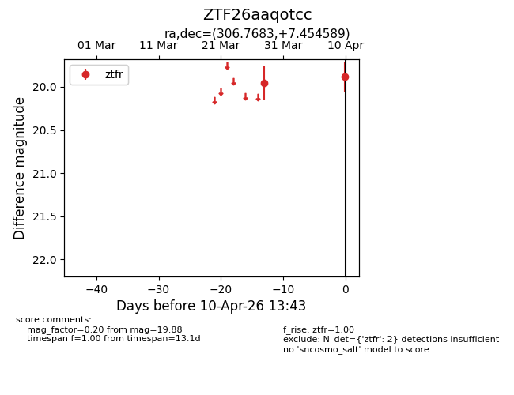
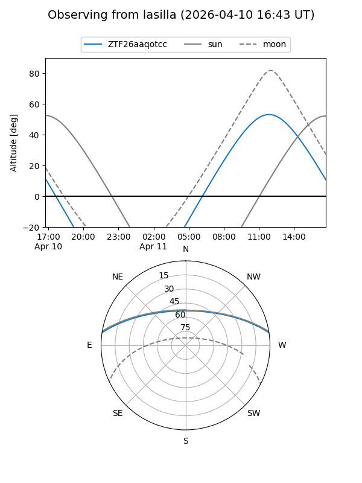
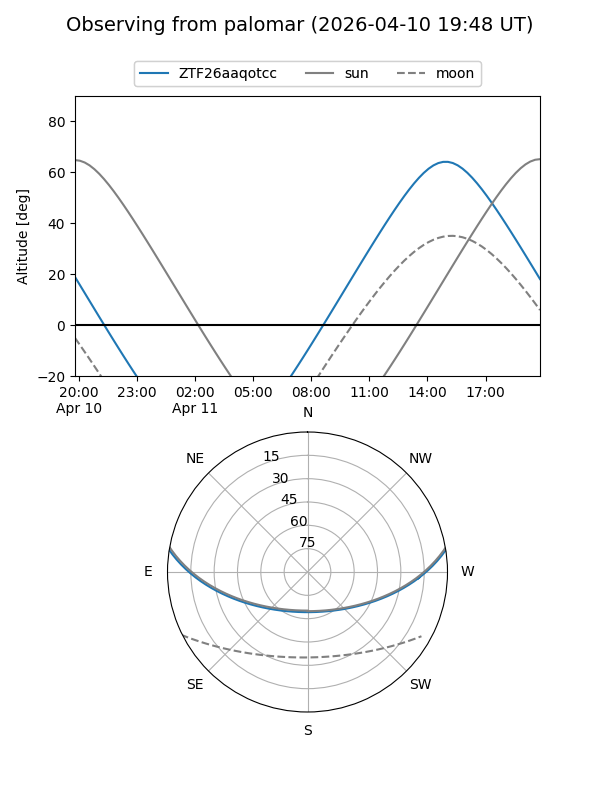
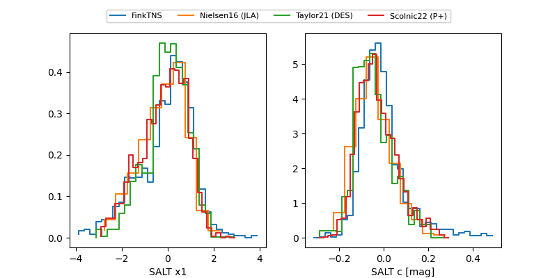

ZTF26aaqotcc
Target ZTF26aaqotcc at 2026-04-10 13:52
Aliases and brokers:
FINK: link
Lasair: link
ALeRCE: link
alt names
ZTF26aaqotcc (ztf,fink_ztf)
Coordinates:
equatorial (ra, dec) = 306.7683,+7.45459
equatorial (HMS+DMS) = 20:27:04.39,+07:27:16.52
galactic (l, b) = (51.1705,-17.36683)
Flags:
Photometry:
last ztfr=19.88
2 ztfr detections
Lightcurve

Visibility


Additional plots
